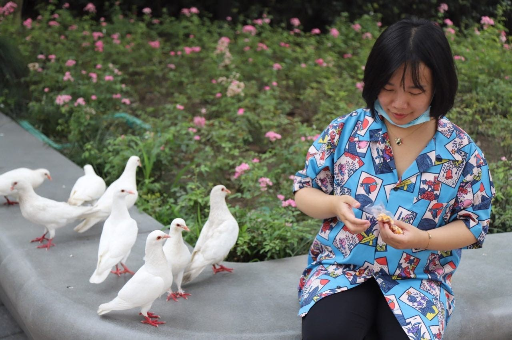
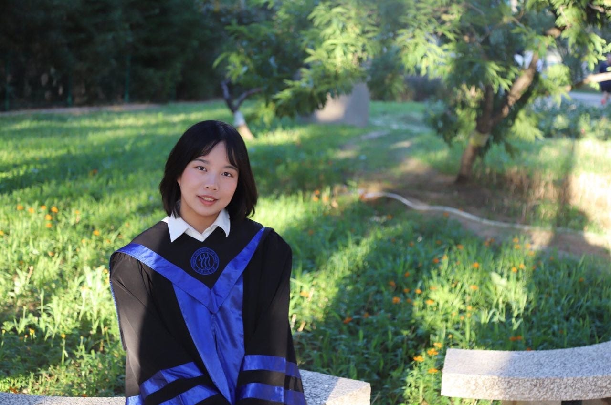
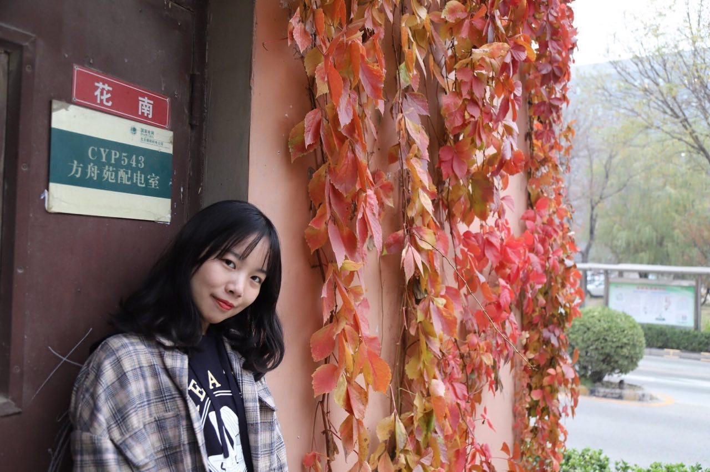
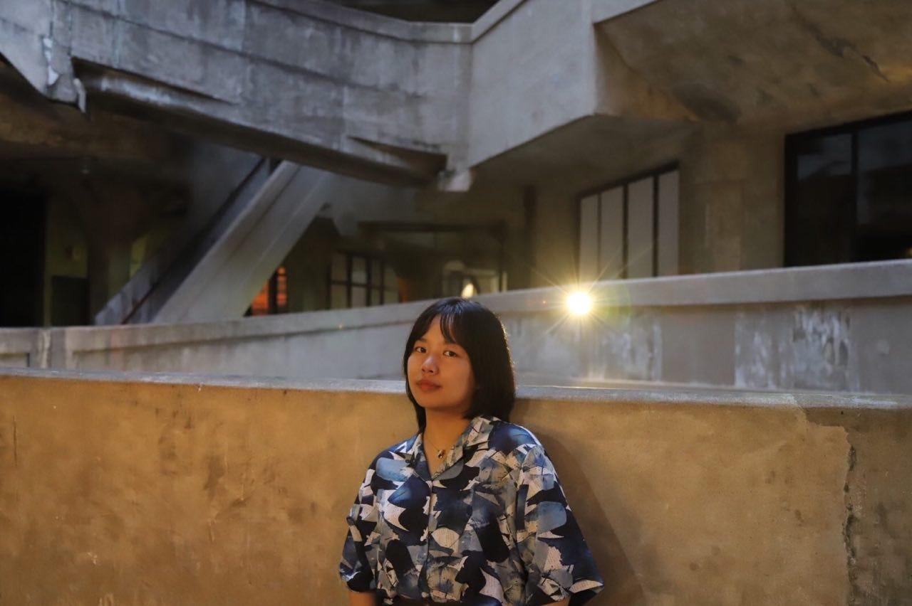

Why Must Our Ordinary Young Lives Pay the Price? The Questioner in the White Paper Movement Video
Cao Zhixin and her friends were formally arrested in late January 2023, with the charges changed to “picking quarrels and provoking trouble，” which may result in a prison sentence of up to five years.

Written by Jiaojiao
Edited by Yu Changye
Translated by S
Cao Zhixin is the quiet one among her friends. She's petite, with neat bangs and a poetic name from a Tang Dynasty poem about the Xiangshui goddess: “Even the gods of Cangwu have developed feelings of longing, then white orchid moves with a fragrant scent.” She works as an editor for the Peking University Press, meticulously sorting through letters from readers and correcting errors for flagship product releases.
On November 27, 2022, in a WeChat group of a dozen or so people called the “Beijing Mutual Aid Group,” several girls began discussing the recent epidemic control measures and the Urumqi fire of residential housing. When they debated whether they should find a place in Beijing to mourn, Cao Zhixin reminded them to be cautious: “Is there any legal risk?” But her comments were drowned out in the chatter. Finally, that night, the girls decided to take action, and Cao Zhixin went out with them.
When they arrived at the lively Liangma River, she helped set up a small altar, sang “Farewell” with the crowd, and shouted her feelings on the policy and the Urumqi tragedy into the night. They left the riverside in the night's first half and went to a barbeque joint for a midnight snack. “There were thousands of people on the scene. No one anticipated they would become the unfortunate target, nor did they know that their group chat had been infiltrated,” a friend said.
Two days later, on November 29, the friends who had been to the riverside were taken to the police station and detained for 24 hours. When Cao Zhixin came out, she did not get her phone and computer back, foreshadowing a grimmer turn of events. On December 22, 2022, after confirming that the four girls who had been with her were again taken away by the police, Cao Zhixin, in fear and desperation, recorded a 3-minute video in her pajamas.
Now, her questions have become the most influential voice in the White Paper Movement, spreading like the lament of the Xiangshui goddess in the poem, “The flowing water spreads to the Xiaopu, the sad wind passes by Dongting.”
Finding Emotional Attachment in Nature
In 1996, Cao Zhixin was born in Hengyang, Hunan, to a large family with deep ties to the small town. With the help and support of relatives, many of her family members worked for local government agencies, and few ventured out to seek better opportunities.
She had a childhood characterized by outstanding academic achievements but also went through a rebellious and indifferent phase during her teenage years. In high school, Cao Zhixin ultimately didn't become a qualified “test-taker,” only managing to get into a local college in Hengyang with a major in Chinese history. As her undergraduate years ended, the idea of “running away” from the small town gave her a strong impetus. Nevertheless, she excelled in the graduate school entrance examination, eventually getting admitted to the Chinese History program at the Renmin University of China. However, her classmates said that only about 20 people were accepted into the program that year, and half of the spots were reserved for students admitted through recommendation. Moreover, the test for the major was tough, and hardly anyone could finish writing it.
Cao Zhixin's supervisor studied Chinese environmental history, which sparked her love for nature. She registered as a volunteer for the NGO “Friends of Nature” and invited experts from “Letting Migratory Birds Fly” to give guest lectures. Compared to vague notions of nature and the grand challenges humanity faces, such as climate and energy, she is more concerned with specific local issues. For example, she researched the protection of migratory birds in the Poyang Lake wetlands of Jiangxi and became fascinated with wetlands and birds. She heard about the Cuihu Wetland Park in northern Beijing – only open for a few hours each week – and set the alarm to book a ticket, eventually succeeding after trying for several weeks. Despite just graduating and being busy with work, she has been trying to make her birdwatching hobby more professional and is saving up to purchase better equipment.
She also cared about individuals, especially marginalized groups whose lives are severely affected by the deteriorating environment. She once went to Zhuzhou, Hunan, to visit people with silicosis. These former farmers left their hometowns in groups during the urbanization process and settled in the dusty construction and mining industries, where they earned money to build houses, but their lungs eventually became filled with dust as hard as stones. In her master's thesis, she attempted to reconstruct the rice riot in Changsha, Hunan, during the late Qing Dynasty and the early Republic of China and its connection to the rice distribution network across the country. She wanted to understand why a place as affluent as Hunan, known for being a land of plenty with the saying “Huguang is abundant, the world is sufficient,” still experienced a social crisis due to a food shortage.

Dream Job
Cao Zhixin graduated in the summer of 2021. Before graduation, she interned at several well-known humanities and social science publishers, such as the Guangxi Normal University Press, Zhonghua Book Company, Houlang Publishing Company, and the Peking University Press. Eventually, she became a formal employee of the Peking University Press.
This was Cao Zhixin's dream job. After joining the Peking University Press, she participated in the re-edition of the flagship product “Global History,” held events to answer readers' questions, invited professors from Peking University to give lectures, and went to local high schools to promote the book. Before she disappeared, she edited “Benjamin's Tomb,” a post-colonial work translated by anthropologist Wang Jing that criticizes state violence and the forgetting of history. Not long ago, she also edited “What is Emotion,” a collection of cutting-edge research on human emotions and psychology.
She embraced the city of Beijing. She decided to rent a room in the hutongs within the Second Ring Road after graduation to get closer to life in the town. It was an old house that was cold in the winter and hot in the summer, with a low ceiling, limited space, and no private bathroom. Nevertheless, she filled the room with books and made it a dream home, even though it took more than two hours for her to commute to her workplace in the northwest Fourth Ring Road.
She named herself “Solaris” after Tarkovsky's movie of the same name. She often visited film archives to watch old domestic movies for 20 yuan per ticket. She loved movies about Beijing the most. From Shi Hui's “My Life in Beijing” about old Beijing to Chen Qiang and Chen Peisi's post-reform period comedy “Erzi Opens a Store,” to Jiang Wen's sad tragedy “In the Heat of the Sun,” and the Beijing-flavored movie “The Big Shot” (featuring Ge You, Xu Fan, and Feng Xiaogang when they first collaborated), she would watch them countless of times. She also read many novels, including “Notes from Underground” and “The Brothers Karamazov.” Recently, she became interested in diasporic literature by Chinese writers and read Malay writer Li Zishu's “Popular Stream” and Zhang Guixing's “Crossing the River with Wild Boars.”

“Beijing Caring and Mutual Aid Group”
At the Beijing Film Festival, Cao Zhixin met Cao Yuan, who also studied at Renmin University. Cao Yuan, a girl from Shandong, had graduated from the Department of Sociology. She was passionate about sociology and anthropology theory and also worked in publishing. The two Caos hit it off and became close friends. Coming from similar backgrounds and with shared ideals, they quickly established a stable social circle in Beijing.
About twenty girls formed a WeChat group called the “Beijing Caring and Mutual Aid Group.” The group consisted mainly of young professional women with love for life in Beijing. Most were born around 1995 and had similar educational backgrounds in cultural studies, history, education, film, and sociology. Many have studied abroad before.
They often met up for meals and conversation, went hiking in the suburbs of Beijing, organized book clubs, watched movies, and discussed current social affairs. Finally, in 2022, the anxiety accumulated over three years of COVID lockdowns peaked. The harsh reality of women's rights in China, revealed by the “Chained Mother of Eight” incident and the Tangshan assault, exacerbated the girls' political depression. However, they still wanted to stay in China because there were things they wanted to accomplish.
Qin Ziyi had a background in law and sociology and self-funded her studies and independent film-making. Yang Liu returned to China to work as a journalist after completing her master's degree in Singapore. At the same time, Li Siqi gave up stable work and income to become an independent journalist.
These idealistic young intellectuals faced a hard and cold reality. The pandemic had almost wholly silenced the film industry, and independent filmmakers were repeatedly suppressed. Journalists had less and less space to report freely, and their writings were increasingly restricted. Freelancers often struggled to make a living and had to rely on their clients. Cao Zhixin's publishing industry also faced problems of decreasing license numbers, increasing restriction zones, and difficulties in publishing.
Like her friends, Cao Zhixin had other options. Her boyfriend, whom she met in college, chose to pursue a Ph.D. abroad, and she also hoped to continue her academic studies. Cao Zhixin had never been abroad before and could not leave Beijing for a long time. But, of course, she, too, wanted to see what the world was like. So she once promised her boyfriend that she would accompany him to roam his country's national parks and wilderness trails.
But until her disappearance, Cao Zhixin had never really put studying abroad on her schedule. Those who knew her well understood the real reason: she did not want to give up her current job as a publishing editor, did not want to leave her beloved China and Beijing, and did not want to leave her friends with whom she spent her days and shared her happiness.
At the end of last year, most of the friends in this WeChat group were arrested on charges of “disrupting public order” Li Yuanjing, Li Siqi, Zhai Dengrui, and Cao Zhixin were formally arrested by the procuratorate in late January 2023, with the charges changed to “picking quarrels and provoking trouble，” which may result in a prison sentence of up to five years. Cao Yuan's whereabouts remain unknown after being detained in early January.
“Who had to use us to deliver the job? What is this revenge for? Why must our ordinary young lives pay the price?” Cao Zhixin's inquiries still echo on millions of electronic screens.

Thanks for reading WOMEN我们's Substack! Subscribe for free to receive new posts and support my work.